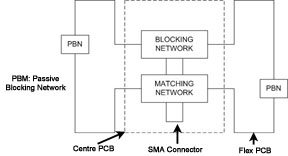
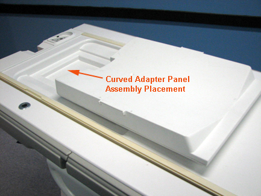
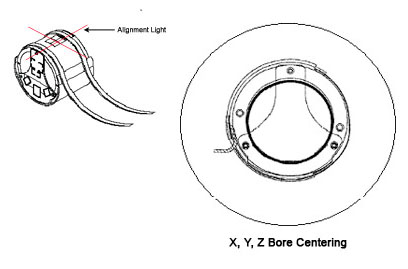
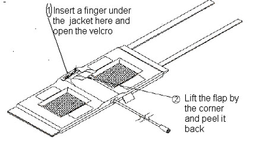
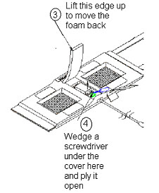
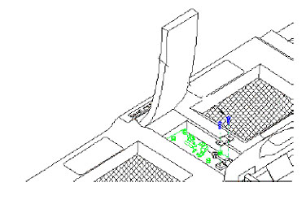
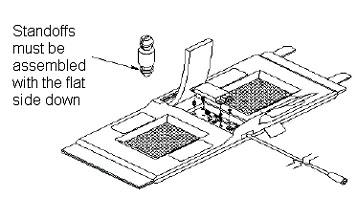
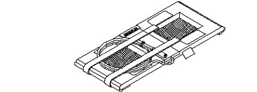
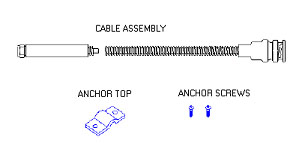

Operating Documentation
Direction 5670006, Rev# 1
Discovery MR750w GEM Service Methods
Module Version 6.0, Version Date 10/18/11
Operating Documentation |
Introduction, Section 1
Setup and Calibration, Section 2
Functional Checks, Section 3
Maintenance, Section 4
Replacement, Section 5
Renewal Parts, Section 6
Signal-to-Noise Ratio (SNR) Data Sheet, Section 7
The 3.0T General Purpose (GP) Flex Coil consists of one major assembly shown below. The unit is 55.6 cm long (not including straps) by 22 cm wide. It has two mesh windows that indicate the open center of the two coils and aid in positioning. Two 78.5 cm long straps are attached to one end of the coil fabric. The undersides of these straps are covered with Velcro® that attach to a Velcro hook strip at the other end of the coil and to four Velcro hooks located above and below the mesh windows. A 183.3 cm long RF cable exits the material on one of the long sides and has a BNC connection that attaches to the Surface Coil quick-disconnect box.
Illustration 1: 3.0T GP Flex Coil

Table 1: Shipping List
| Description | GE Part Number | Quantity |
| 3.0T GP Flex Coil | 2373366 | 1 |
| Operator Manual | 2373326-299 | 1 |
Coil should be stored in the Scan Room.
Dimensions: 55.6 cm x 22 cm x 4 cm (excluding cable assembly)
Strap Length: 78.5 cm
575 grams, maximum
The Signa GP Flex Coil design is a linear, receive-only flexible coil. It consists of two loops that are serially connected to create a co-rotating, "saddle coil" pair. If the loops are positioned in a more open fashion (i.e., move farther away from each other toward a planar or flat configuration), the image uniformity decreases. For close positioning, do not overlap the coil ends. Doing so will not damage the coil, but performance will suffer.
When aligned properly, this saddle design provides exceptional uniformity across the sensitive volume of the coil and a minimum of bright spots or high-intensity areas. For optimal positioning, the circular shape should be maintained with the two mesh windows 10 cm apart and the coil ends 5 cm apart. Some deviation from the optimal position will not significantly degrade the uniformity. Therefore, this coil can be used in anatomical areas such as the hip, brachial plexus, larger knees and ankle.
The coil consists of one major assembly shown in Illustration 1. The two loops are in a flexible material covered with fabric. This allows the GP Flex Coil to bend in one direction, making it easy to wrap around the anatomy of interest.
The Functional Block Diagram of the antenna electronics is shown in Illustration 2. The two flex PCB wings on either side of the rigid PCB form the loops. The rigid PCB has a matching network that matches the loaded antenna to 50 ohms and an active blocking network. The blocking network consists of a single PIN diode and a tuned LC network. The diode is forward biased whenever the body coil transmits. The external cable is connected to the antenna via a right angle SMA jack. The flex PCB has passive blocking networks that consist of a Schottky Diode and a tuned LC network.
Illustration 2: GP Flex Coil Functional Block Diagram

The name for this coil is: GPFlex. Add the coil using the Configuration File Manager. Refer to the appropriate Service Methods CD: System Level Procedures > Software Utilities. If the coil does not exist in Coil Config File, GE Service personnel should download the latest Coil Config File from the Automated Support Center (AutoSC).
When positioning the coil around a phantom or anatomy, do not permit the ends to overlap. Use pads as necessary.
Perform system level Signal-to-Noise Check. Refer to appropriate system Service Methods CD: System Level Procedures > Functional Checks > Signal-to-Noise Checks.
Perform Section 3.2 - Coil Imaging Performance Verification.
On a periodic basis, such as during planned maintenance, perform the quality assurance checks as outlined below to ensure the coil is operating properly.
Check external cable for cracks or cuts.
Perform Section 3.2 - Coil Imaging Performance Verification and record data values in the Data Sheet.
Perform system level Signal-to-Noise Check. Refer to appropriate system Service Methods CD: System Level Procedures > Functional Checks > Signal-to-Noise Check.
Table 2: Tools Required
| Description | GE Part Number | Quantity |
| Head TLT Sphere (Doped Silicon) | 2359877 | 1 |
| QA Load Phantom | 2360031 | 1 |
| Curved Panel Adapter Assembly | 5395828 | 1 |
SNR measurements for the GP Flex coil require sets of signal and noise scans. Refer to the Data Sheet in Section 7 to understand the data required to calculate the SNR.
The Image Quality Check uses two different protocols for signal and noise image acquisition. The signal scan is an FSE sequence used to minimize susceptibility and B0 inhomogeneity effects. The noise scan is a GRE sequence that has a Control Variable (do_noise) to eliminate the transmit RF completely during the scan. The signal scan must be run prior to the noise scan as the R1, R2, and TG values from the signal scan are used for the noise scan.
Remove the Quad Head Coil from the cradle before performing any body or surface coil scans. Failure to do this may result in damage to the Quad Head Coil T/R network.
Insert the curved panel adapter assembly in the magnet end of the table as shown below.
Illustration 3: Curved Panel Adapter Assembly

At the magnet, press the [Alignment Light] button to turn on the light. Move the cradle to align the coil to the alignment light as shown below, and press the [Landmark] button to landmark the alignment.
Illustration 4: Landmark and Alignment

Move the coil into the scan position by pushing the [Move to Scan] button; ensure the cable does not get snagged.
At the console, set the protocols according to the table below.
Table 3: Signal Protocols
| Patient/Exam Information | |
| ID: | geservice |
| Name: | GP Flex Coil |
| Patient Weight: | 111 lb. (50 kg) |
| A/P Center, R/L Center: | 0.0 |
| Table Delta: | 0.0 |
| Patient Position | |
| Patient Position: | Supine |
| Patient Entry: | Head First |
| Coil: | HD GE General Purpose Flex Coil |
| Series Description: | Signal |
| Imaging Parameters | |
| Plane: | Axial |
| Mode: | 2D |
| Pulse Seq: | FSE-XL |
| Chem SAT: | None |
| Contrast: | <leave blank> |
| Scan Timing | |
| # TE(s) per Scan: | 1 |
| TE: | 17 |
| TR: | 750 |
| Echo Train Length: | 4 |
| Bandwidth: | 15.63 |
| Acquisition Timing | |
| Freq: | 256 |
| Phase: | 256 |
| NEX: | 1 |
| Phase FOV: | 1.00 |
| Freq. DIR: | R/L |
| Shim: | Auto |
| Phase Correct: | On |
| Table Delta: | 0.00 |
| Scanning Range | |
| FOV: | 24 |
| Slice Thickness: | 5 |
| Spacing: | 13.8 |
| A/P Center, R/L Center: | 0.00 |
| S/I Start: | S0 |
| S/I End: | I0 |
| # Slices: | 5 |
Click [Save Rx] to download the protocols, then click [Prepare to Scan].
Run [Auto Prescan]. Record the R1, R2, and TG values on the SNR Data Sheet in Section 7.
Run [Scan].
A signal scan must be run prior to the noise scan as the same R1, R2, and TG values must be used for both the signal and noise scans. Do not run an Auto Prescan prior to the noise scan as the values will be changed.
Copy the signal scan series. Use [Copy Series] (highlight signal series and click right mouse button) and [Paste Series] in RX Manager.
Click [Setup] and set the protocols as mentioned in Table 4.
Click[Save Rx].
Open [Display CVs] menu under Research. Set the rhformat and do_noise CVs to 1.
Run [Manual Prescan]. Do not make any changes.
Click [Done].
Run [Scan].
Table 4: Noise Protocols
| Patient Position | |
| Patient Position: | Supine |
| Patient Entry: | Head First |
| Coil: | HD GE General Purpose Flex Coil |
| Series Description: | Noise |
| Imaging Parameters | |
| Plane: | Axial |
| Mode: | 2D |
| Pulse Seq: | GRE |
| Chem SAT: | None |
| Contrast: | leave blank |
| Scan Timing | |
| # TE(s) per Scan: | 1 |
| TE: | Min Full |
| TR: | 34 |
| Flip Angle: | 1 |
| Bandwidth: | 15.63 |
| Acquisition Timing | |
| Freq: | 256 |
| Phase: | 256 |
| NEX: | 1 |
| Phase FOV: | 1.00 |
| Freq. DIR: | R/L |
| Shim: | Auto |
| Phase Correct: | Off |
| Table Delta: | 0.00 |
| Scanning Range | |
| FOV: | 24 |
| Slice Thickness: | 5 |
| Spacing: | 0 |
| A/P Center, R/L Center: | 0.00 |
| S/I Start: | S0 |
| S/I End: | I0 |
| # Slices: | 5 |
| Table Delta: | 0.00 |
Regions of interest in both signal and noise images can be measured directly in the image browser. Click the [Measure] button, select the circular or rectangular shape, and adjust its size and orientation when the shape is displayed in the selected image. Mean, Standard Deviation, and Area of Region of Interest (ROI) will display in the lower right corner of the image.
| NOTE: | The SNR calculation uses the Mean of the signal image and Standard Deviation of the noise image. SNR is measured for each element, not on the composite image. |
For the signal measurement, choose an ROI covering approximately 80% of the phantom. Also measure the noise with an ROI covering 80% of the Field of View (FOV). ROI should be taken as circle centered at Phantom. Examples of typical ROIs are shown below.
Illustration 5: Signal and Noise Scan ROI Examples

The SNR measurements must be greater than or equal to the specification in the table below.
Table 5: SNR Specifications
| Slice Location | Image Number | SNR |
| S0 | 3 | 90 |
Select the diode test function on the Digital Multimeter (DMM).
Connect the positive lead of the DMM to the center pin of the BNC on the external cable, and connect the negative lead to the main housing/ground of the BNC. (See the illustration below.)
Illustration 6: BNC Connector
Flex the external cable, especially near the connectors and the strain relief, and observe that a reading of 0.400 to 0.600 should remain on the DMM with no instability or fluctuations.
Connect the positive lead of the DMM to the main housing/ground of the BNC on the external cable, and connect the negative lead to the center pin of the BNC.
Flex the external cable, especially near the connectors and the strain relief, and observe that a reading of Infinity should remain on the DMM with no instability or fluctuations.
If the cable fails any of the above tests, replace it. Refer to Section 5.2 - External Cable Replacement.
There is only one PIN diode in this antenna. The following procedure will indicate if the PIN diode is defective.
| ||||
| Safety Hazard! | ||||
| Due to safety hazards associated with soldering in the field, PIN diodes are no longer FRUs. | ||||
| If the coil has a defective PIN diode, the respective component MUST be replaced. |
Select the Diode Test function on the DMM.
Connect the positive lead of the DMM to the center pin of the BNC on the external cable, and connect the negative lead to the main housing/ground of the BNC. (See Illustration 6
A reading of 0.400 to 0.600 should be observed on the DMM.
If a reading below 0.400 is observed in either direction, either the output cable is shorted or the PIN diode is bad.
If a reading above 0.600 is observed, the PIN diode is defective.
Connect the positive lead of the DMM to the main housing/ground of the BNC on the external cable, and connect the negative lead to the center pin of the BNC.
A reading of Infinity should be observed on the DMM. If a reading of Infinity is observed in both directions, either the output cable is open or the PIN diode is open.
| NOTE: | If the coil has a defective PIN diode, the respective component must be replaced. |
| ||||
| Detach coil connector from scanner before attempting to clean. | ||||
| do not reattach after cleaning until the coil dries completely. | ||||
| having the coil attached to the system during cleaning or when it is wet may result in electrical shock. |
| ||||
| Do no spray or pour cleaning solution directly on the coil. | ||||
| Do not submerge the coil in solution. | ||||
| The coil contains sensitive electronics components that could be damaged by the solution. |
If necessary, a 10% bleach solution can be used for more rigorous cleaning; however, some discoloration of the strap, cover, or pad may occur.
Contact GE authorized service personnel for disposal of the coil at the end of product life.
Simple removals that are clearly obvious are not described here. Unless otherwise noted, the steps for reassembly are simply the reverse order of the steps described for disassembly.
Refer to the illustrations that follow to disassemble the coil.
Illustration 7: Coil Disassembly

Illustration 8: Coil Disassembly

To reassemble the coil:
Place the cover back on the posts and press on it until it snaps into place.
Push the foam flap under the jacket.
Carefully put the fabric flap into place, making sure the Velcro on the edges lines up with the Velcro on the jacket. Tuck the end of the flap under the jacket.
Press over the Velcro while making sure no edges are left open.
Disassemble the coil as instructed in Section 5.1 - Assembly/Disassembly of Coil. Unscrew the two nylon screws and remove the strain relief upper cover.
Unscrew (use two 8mm wrenches, one on the circuit board female connector and one on the male cable connector), and remove the male SMA cable connector from the circuit board as shown below. (Be careful not to twist the female SMA connector from the circuit board.)
Illustration 9: Replacing External Cable

Remove the external cable from the coil.
Install the new cable. Stabilize the circuit board and the connector on the circuit board.
| NOTE: | Too much torque (>2 kgf-cm) can cause damage. |
Reattach the strain relief, and reassemble the coil per Section 5.1 - Assembly/Disassembly of Coil.
Refer to Section 6 - Renewal Parts for the hardware kit part number.
To replace the cover assembly, refer to Section 5.1 - Assembly/Disassembly of Coil.
To replace the upper strain relief block and the two screws, refer to Section 5.2 - External Cable Replacement.
If a plastic standoff breaks, it can be pulled out using needle-nose pliers. Insert a new standoff in its place while making sure that the flat end goes in first as shown below.
Illustration 10: Replacing Mechanical Hardware

The table below lists the replaceable parts for the GP Flex Coil.
Table 6: Field Replaceable Units
| Description | GE Part Number |
| 3.0T GP Flex Coil | 2373366 |
| Cable Kit | 2379330 |
| Hardware Kit | 2383558 |
| Curved Panel Adapter Assembly | 5395828 |
| NOTE: | The items in this table are pictured below (adapters excluded). |
Illustration 11: 3.0T GP Flex Coil

Illustration 12: Cable Kit

Illustration 13: Hardware Kit

Use the table provided in the PDF file below to record the calculated SNR data obtained in Section 3.
3.0T GP Flex Coil SNR Data Sheet: